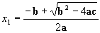
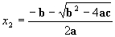

in which a, b and c are real values. This equation may have one or two real roots or no real root at all. Here is the criteria that is used to determine the solution to this equation:
1) if b2- 4ac > 0 There are two different solutions to this equation. These solutions are:


2) if b2- 4ac < 0 There is no real solution to this equation. However, this equation has imaginary solutions that one can find.
3)
if b2 - 4ac = 0
This equation has one solution, which can be found by setting b2-
4ac to 0 in the first case. Thus, we may assume that
both roots are the same and equal to -b/2a. So,
you may combine (1) and (3) in one.
You are to write a program that can solve many sets of quadratic equations. The program will ask users whether they want to solve another equation. The user decides to continue by entering 1 or to terminate by entering 0 or any other number. The program will ask the user to input the a, b and c, and then will display the answer based on the criteria given above.
Step 1) Develop your algorithm and test it on paper. Remember
that there are several precautions that you need to take when you solve
this problem. I let you figure them out, but they are out there and
you need to watch for them.
Step 2) Implement the algorithm, write a C++ program and test it to
make sure it produces the correct results. Here are some test cases.
Coefficients
Solution
a = 2, b = 4, c = 2
Case (3)- Both roots are the same and equal to -b/2a, which is -4/4 = -1
a = 3, b = 4, c = 1 Case (1) - There are two roots, x1 = -0.33333 and x2 = -1
a = 3, b = 2, c = 1 Case (2) - There is no real solution to this equation.
Note that if a user enters an a that is 0, you will have a solution to the equation that is given at the top, but the equation is no longer a quadratic equation. In such a case, if you use the solution to quadratic equations, you will have a divide by 0 (run-time error) error when you run your program. So be prepared to display the appropriate message when a user enters a = 0.
All students are expected to correctly develop their own algorithm before
writing the program. However, an algorithm is given here
as a hint.
{kind=link}